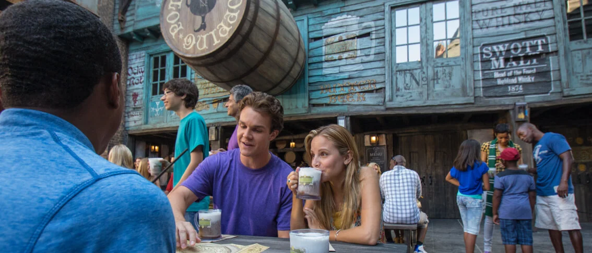
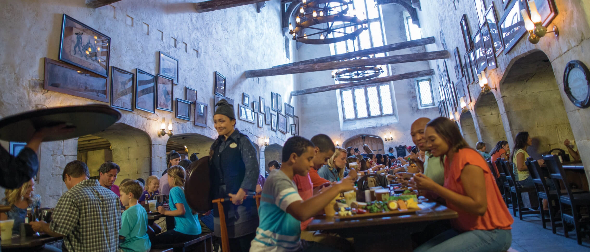

"Nestled within Carkitt Market is this walk-up counter where you can cool off with a variety of drinks including Butterbeer™ (regular or frozen, and ice-cream), Pumpkin Juice™, Tongue Tying Lemon Squash, Otter’s Fizzy Orange Juice, Peachtree Fizzing Tea, Fishy Green Ale, our Wizard’s Brew and Dragon Scale beers, and more."

"The Leaky Cauldron™ is a small, grubby-looking pub and inn. Once inside, you'll find yourself under a cathedral ceiling with views towards the guest rooms in the inn. The delicious traditional British fare served here includes Bangers and Mash, Fisherman's Pie, Vegan Chicken Curry and Ploughman's Platter, plus a kid's menu offering Fish and Chips and more."